Multiple Remote
alasan melakukan ini
-
karena mungkin saja kita ingin sinkron ke beberapa
remote sekaligus
ilustrasi
- nanti ada 3 repo, dari asli nya, user, dan local
- ingin ketiganya selalu sinkron
- kita fork dari yang asli
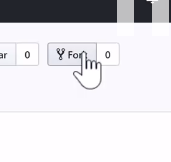
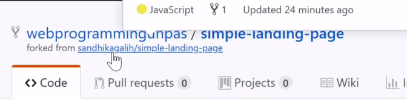
- kita copy URL nya HTTPS
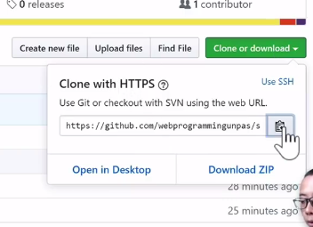
- buka git bash
- git clone
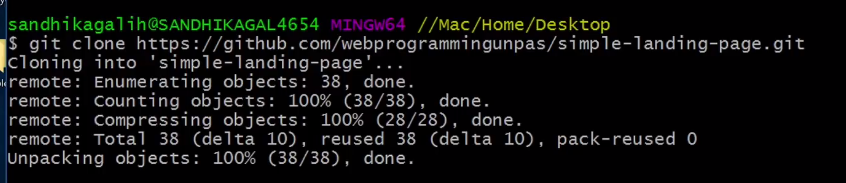
- kita cek remote nya
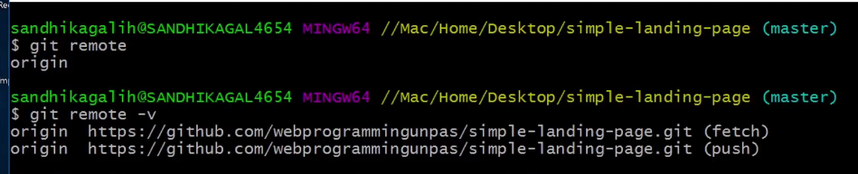
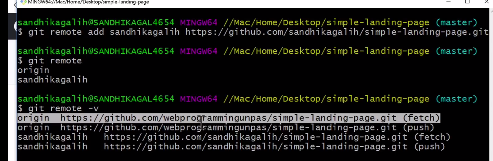
-
kita ingin melihat commit ke32 nya, nah itu
sandikagalih kita fetch dulu
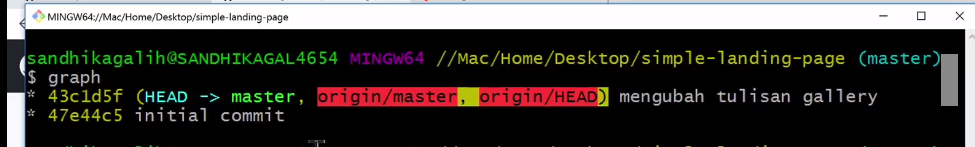
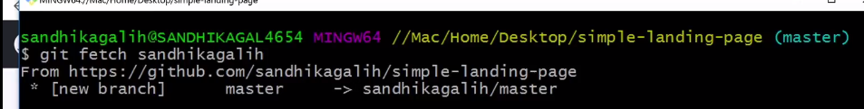
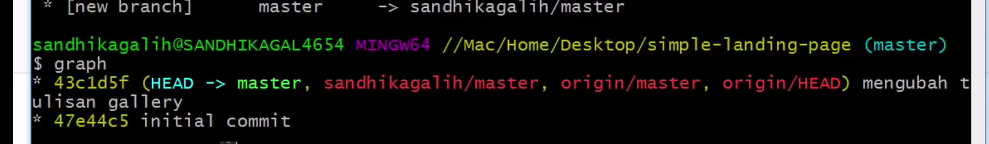
repo asli ada perubahan
-
karena kita tidak tau ada perubahan / tidak : solusi
kita fetch
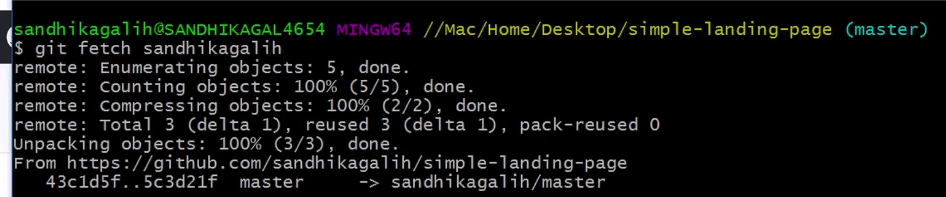
- kita graph
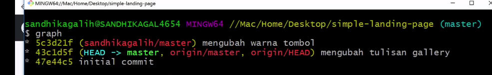
- supaya sama lagi gimana? : kita harus merge
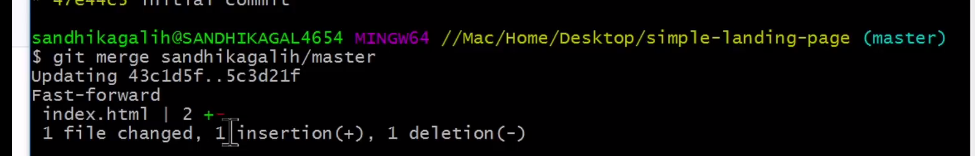